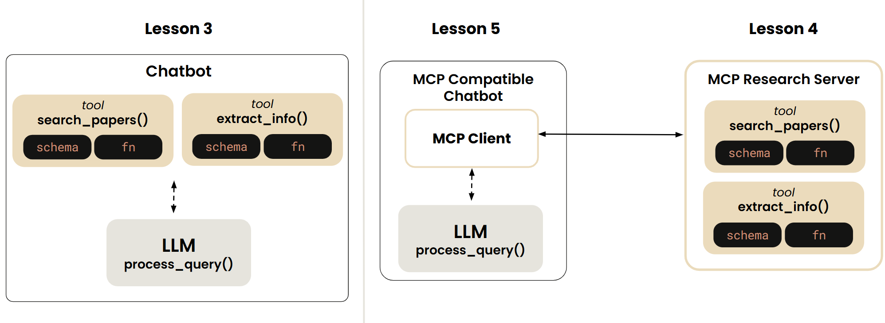

from gates_openai import create_response
def process_query(query: str = None, previous_response_id: str = None):
messages = [
{
"role": "system",
"content": """You are a helpful assistant.
Use search_papers tool to search for academic papers on a given topic on arxiv.
User extract_info tool to get more information on papers retrieved through the search_papers tool.
"""
},
{
"role":"user",
"content":query
}
]
kwargs = {}
if previous_response_id:
kwargs["previous_response_id"] = previous_response_id
response = create_response(
model = "gpt-4o-mini",
tools = tools,
input = messages,
**kwargs
)
function_calls = [
item for item in response.output
if item.type == "function_call"
]
if not function_calls:
return response.output_text, response.id
while True:
tool_outputs = []
for call in function_calls:
args = json.loads(call.arguments)
result = TOOL_MAPPING[call.name](**args)
tool_output = "\n".join(map(str, result))
# print(tool_output)
tool_outputs.append({
"type": "function_call_output",
"call_id": call.call_id,
"output": tool_output
})
messages.extend(tool_outputs)
response = create_response(
model = "gpt-4o-mini",
input = tool_outputs,
tools = tools,
previous_response_id = response.id
)
function_calls = [
item for item in response.output
if item.type == "function_call"
]
if function_calls:
print("Function calls found...")
continue
else:
return response.output_text, response.id
def chat_loop():
print("Type your queries or 'quit' to exit.")
response_id = None
while True:
try:
query = input("\nQuery: ").strip()
if query.lower() == 'quit':
break
response, response_id = process_query(query, response_id)
print("\n")
print(response)
except Exception as e:
print(f"\nError: {str(e)}")Creating an MCP Client
In the previous exercise, you created an MCP research server that exposes 2 tools. In this exercise, you will make the chatbot communicate to the server through an MCP client. This will make the chatbot MCP compatible. You will continue from where you left off in exercise 2

Back to the Chatbot Example
Here are the main code parts (process_query, chat_loop) from the chatbot example of exercise 1. Notice that the burden of tool definitions and execution is now shifted onto the MCP server, so the chatbot logic only contains code related to processing the user queries and to keeping the chat loop running until the user types quit.
Building your MCP Client
Now you will take the functions process_query and chat_loop and wrap them in a MCP_ChatBot class. To enable the chatbot to communicate to the server, you will add a method that connects to the server through an MCP client, which follows the structure given in this reference code:
Reference Code
from mcp import ClientSession, StdioServerParameters, types
from mcp.client.stdio import stdio_client
# Create server parameters for stdio connection
server_params = StdioServerParameters(
command="uv", # Executable
args=["run example_server.py"], # Command line arguments
env=None, # Optional environment variables
)
async def run():
# Launch the server as a subprocess & returns the read and write streams
# read: the stream that the client will use to read msgs from the server
# write: the stream that client will use to write msgs to the server
async with stdio_client(server_params) as (read, write):
# the client session is used to initiate the connection
# and send requests to server
async with ClientSession(read, write) as session:
# Initialize the connection (1:1 connection with the server)
await session.initialize()
# List available tools
tools = await session.list_tools()
# will call the chat_loop here
# ....
# Call a tool: this will be in the process_query method
result = await session.call_tool("tool-name", arguments={"arg1": "value"})
if __name__ == "__main__":
asyncio.run(run())Adding MCP Client to the Chatbot
The MCP_ChatBot class consists of the methods: - process_query - chat_loop - connect_to_server_and_run
and has the following attributes: - session (of type ClientSession)
- available_tools
In connect_to_server_and_run, the client launches the server and requests the list of tools that the server provides (through the client session). The tool definitions are stored in the variable available_tools and are passed in to the LLM in process_query.

In process_query, when the LLM decides it requires a tool to be executed, the client session sends to the server the tool call request. The returned response is passed in to the LLM.

%%writefile mcp_chatbot.py
from mcp import ClientSession, StdioServerParameters, types
from mcp.client.stdio import stdio_client
from typing import List
import asyncio
import nest_asyncio
import json
from gates_openai import create_response
nest_asyncio.apply()
class MCP_ChatBot:
def __init__(self):
# Initialize session and client objects
self.session: ClientSession = None
self.available_tools: List[dict] = []
async def process_query(self, query: str = None, previous_response_id: str = None):
messages = [
{
"role": "system",
"content": """You are a helpful assistant.
Use search_papers tool to search for academic papers on a given topic on arxiv.
User extract_info tool to get more information on papers retrieved through the search_papers tool.
"""
},
{
"role":"user",
"content":query
}
]
kwargs = {}
if previous_response_id:
kwargs["previous_response_id"] = previous_response_id
response = create_response(
model = "gpt-4o-mini",
tools = self.available_tools,
input = messages,
**kwargs
)
function_calls = [
item for item in response.output
if item.type == "function_call"
]
if not function_calls:
return response.output_text, response.id
while True:
tool_outputs = []
for call in function_calls:
tool_name = call.name
tool_args = json.loads(call.arguments)
result = await self.session.call_tool(tool_name, arguments = tool_args)
tool_output = "\n".join(map(str, result))
# print(tool_output)
tool_outputs.append({
"type": "function_call_output",
"call_id": call.call_id,
"output": tool_output
})
messages.extend(tool_outputs)
response = create_response(
model = "gpt-4o-mini",
input = tool_outputs,
tools = self.available_tools,
previous_response_id = response.id
)
function_calls = [
item for item in response.output
if item.type == "function_call"
]
if function_calls:
print("Function calls found...")
continue
else:
return response.output_text, response.id
async def chat_loop(self):
print("Type your queries or 'quit' to exit.")
response_id = None
while True:
try:
query = input("\nQuery: ").strip()
if query.lower() == 'quit':
break
response, response_id = await self.process_query(query, response_id)
print("\n")
print(response)
except Exception as e:
print(f"\nError: {str(e)}")
async def connect_to_server_and_run(self):
# Create server parameters for stdio connection
server_params = StdioServerParameters(
command="uv", # Executable
args=["run", "../2-MCPServer/research_server.py"], # Optional command line arguments
env=None, # Optional environment variables
)
async with stdio_client(server_params) as (read, write):
async with ClientSession(read, write) as session:
self.session = session
# Initialize the connection
await session.initialize()
# List available tools
response = await session.list_tools()
tools = response.tools
print("\nConnected to server with tools:", [tool.name for tool in tools])
self.available_tools = [{
"type": "function",
"name": tool.name,
"description": tool.description,
"parameters": tool.inputSchema
} for tool in response.tools]
await self.chat_loop()
async def main():
chatbot = MCP_ChatBot()
await chatbot.connect_to_server_and_run()
if __name__ == "__main__":
asyncio.run(main())Running the MCP Chatbot
Terminal Instructions
- Open a terminal
- Navigate to the
3-MCPClientdirectory:cd 3-MCPClientuv init
- Activate the virtual environment:
uv venvsource .venv/bin/activate
- Install the additional dependencies:
uv add mcp arxiv nest_asyncio openai
- Run the chatbot:
uv run mcp_chatbot.py
- To exit the chatbot, type
quit.
🚨 Different Run Results: The output generated by AI chat models can vary with each execution due to their dynamic, probabilistic nature. Don’t be surprised if your results differ from those shown in the video.